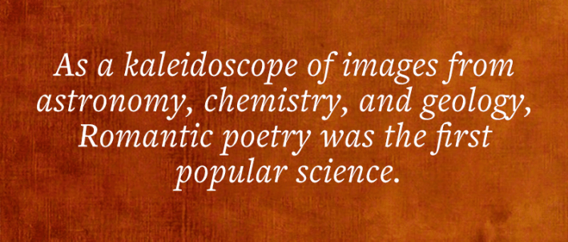
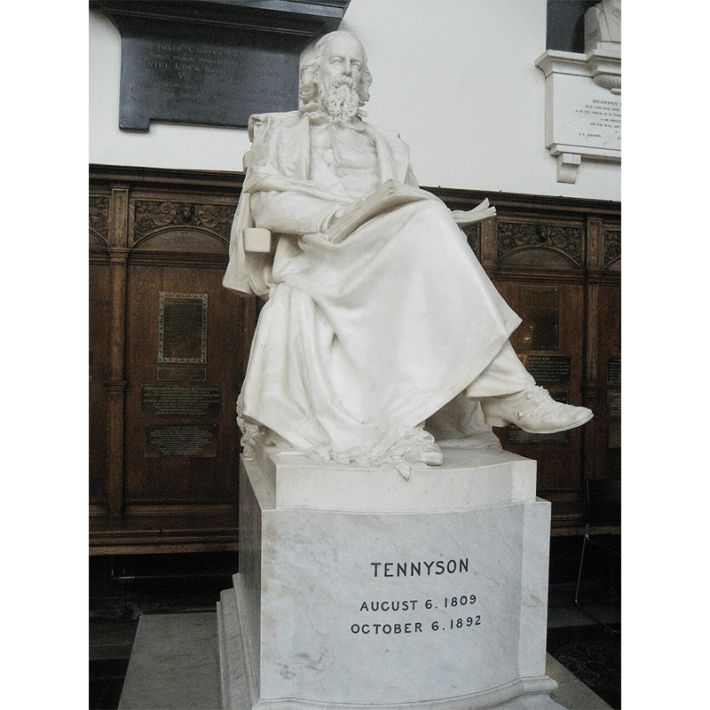
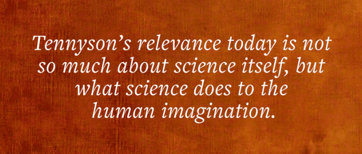

This story is featured in our upcoming print issue—subscribers get full access both in print and online. Join now.
When Richard Holmes was a fellow at Trinity College, Cambridge, in 2001, researching the surprising affinity among Romantic poets and scientists, he often walked by a giant white marble statue of Alfred Lord Tennyson, looking imposing and, well, irrelevant. Tennyson was the Victorian poet born after the wild Romantics, vaguely remembered by English senior citizens who had to memorize “The Charge of the Light Brigade” in school. “When can their glory fade?/O the wild charge they made!”
“With his long beard, Tennyson looked monolithic, like he had nothing to do with anything,” Holmes said to me recently, from his home in Norfolk, England. “Life had passed on.”
Being the natural-born biographer he was—Holmes had written vivid books about the poets Shelley and Coleridge—he began to wonder about the young man beneath the beard. Who was Tennyson before he became England’s stodgy poet laureate? Holmes seemed to recall that Tennyson was tutored by another one of the marble statues in the chapel, William Whewell, a Cambridge don of science, who in the first decades of the 1800s published works on astronomy, physics, mineralogy, and philosophy. Perhaps science lurked in Tennyson’s background.

Holmes filed away the thought as he went on to write his 2008 book about the Romantic poets and scientists, The Age of Wonder, a brilliant corrective to the “two-cultures” trope that 19th-century science cut the heart out of humanity and the humanities. The era’s radical poets—Byron, Shelley, Coleridge—read deeply in the burgeoning sciences of astronomy, chemistry, and electricity. The scientific revelations supercharged their poetry and amplified the natural world and the cosmos with astonishing beauty and terror.
The poets palled around with scientists like gregarious chemist Humphry Davy, whose experiments with dosing himself and volunteers with nitrous oxide, formed a blueprint for anesthesia. Getting high on the gas was an “unmingled pleasure,” Coleridge said, echoing Xanadu, with its “stately pleasure dome,” in his poem “Kubla Khan.”
Read more: “Who Said Science and Art Were Two Cultures?”
In London taverns with Coleridge and essayist Charles Lamb, anarchist philosopher William Godwin and his wife Mary Wollstonecraft, Davy loved to hold forth on the likeminded mission of science and art. The genius of Newton and Shakespeare are not remote in character, Davy would say. “Imagination, as well as the reason, is necessary to perfection in the philosophic mind.”
Holmes spoke with infectious enthusiasm for his subjects, as if they were old friends. “One of the most interesting exchanges that Coleridge and Davy had was on the idea of pain,” he told me. “What is the function of pain, particularly in animal life? What is it doing? Why was it put there? They would frame it in terms of, ‘Why did God put pain into this system?’ This was the kind of metaphysical discussion they often had.”
Crossing the wires of science and poetry sparked a dangerous new awareness. Through the eyepieces of the new telescopes, illuminating the vastness of space, Earth suddenly looked insignificant. Fossils of extinct species, uncovered in rock layers that had to be hundreds of thousands of years old, gave lie to the Bible story that God created all creatures great and small in six days. Religion was losing its hold on truth.

WHO ARE YOU?: While biographer Richard Holmes was a fellow at the University of Cambridge, he would walk by this statue of Alfred Lord Tennyson. He began to wonder if he could chip away the image of the ancient Victorian bard and expose the young poet beneath. Photo courtesy of Vysotsky / Wikimedia Commons.
The complex feelings caused by the new revelations can’t be understated. Nature wasn’t as people had been told—it was more extraordinary! The Romantic poets captured the vertigo of a worldview caving in, and a new one evolving. And their poems were widely read. As a kaleidoscope of images from astronomy, chemistry, and geology, Romantic poetry was the first popular science.
After The Age of Wonder was published, Holmes wrote about the adventures and scientific discoveries (the layered spheres of Earth’s climate system) of the first hot-air ballooners, and candid reflections on his experiences as a biographer, the Frankenstein art of bringing the dead alive. But he knew the story of science and poetry couldn’t have ended with the Romantics and began to think about the next chapter. He didn’t have to think long. His curiosity about Tennyson returned. He decided to chip away the marble statue and meet the real man underneath.
Tennyson was born in 1809, the same year as Charles Darwin and Edgar Allan Poe. He came of age in a chaotic family of 11 in the country parish of Somersby in England. His father was the parish’s highly educated rector who carried a chip on his shoulder for being left out of his family inheritance for being “rude and ungovernable” as a kid.
To escape his father’s drunken rages, Tennyson journeyed to the seaside town of Mablethorpe and strolled along the windy dunes and beaches on the North Sea. “I come again,” he wrote in a poem: “Gray sand-banks, and pale sunsets, dreary wind, Dim shores, dense rains, and heavy-clouded sea.” Not the cheeriest of chaps, that Tennyson.
At Cambridge, Tennyson often hid behind his sullen self. At the same time, Holmes would write, the budding poet was “strange, energetic, independent, and subtly engaged with contemporary questions” arising from the daring science offending the Christians in his midst. Tennyson read through works on astronomy, geology, and the incipient science of evolution with his mind ablaze.
RED IN TOOTH AND CLAW: Richard Holmes, at his home in Norfolk, England, reads a famous stanza from Tennyson’s epic, “In Memoriam,” drawn from the poet’s reading of Principles of Geology by Charles Lyell.
Holmes grew up farther south in Kent County. In his early teens, following his own wandering spirit, he and his older sister rode their bikes a couple hundred miles north to camp on the dunes along the North Sea beaches. Holmes hadn’t returned for decades when in 2020, deep into his research on Tennyson, with England under lockdown during the dreary Covid days, he had the freeing idea to make like the poet and return to the gray sand banks and wander under pale sunsets himself.
“The North Sea coast is quite fierce, and always meant rather a lot to me,” Holmes said. “It was wonderful returning there. I felt Tennyson’s childhood excitement as my own. Coming back to the atmosphere of that wild North Sea coast was quite another level of inspiration. It was like returning to my old idea to go and walk in the footsteps of people to write about them.”
Holmes’ reference is to his 1985 book Footsteps, which trailblazed a new model for the literary biography as autobiography, and travel writing too. Holmes’ own life and passions emerge as he traces the footsteps of his young idols, including Robert Louis Stevenson, Wollstonecraft, and publicly flamboyant Romantic French poet Gerard de Nerval, best known (if at all), for walking through the gardens of Paris with a lobster on a leash.
After his drives to the North Sea coast in 2020, Holmes felt a newfound closeness to Tennyson. Discovering Tennyson’s engagement with science deepened the connection. Through Tennyson’s eyes, Holmes thought, he could portray the social earthquake of science in the Victorian era—and take readers with him. Which he has done beautifully in The Boundless Deep: Young Tennyson, Science, and the Crisis of Belief, published earlier this year.
Read more: “Up, Up, and Away With Science”
Tennyson is an ideal lens on the insurrections of science because his brooding nature made him so incredibly sensitive. His father’s violent outbursts not only cracked apart the family—two of Tennyson’s siblings were confined to a mental asylum—but Tennyson’s faith.
“Because of the nature of what we’d now call a dysfunctional family,” Holmes said, “Tennyson, despite his golden education, became a kind of permanent outsider. That allowed him to take on board all these rather frightening things about science, to educate himself and write about them.”
If Tennyson was a saturnine fellow by nature, he sunk even deeper into his tenebrous self when his closest friend, Arthur Hallam, died of a stroke at age 22. Tennyson and Hallam trekked across the mountains and villages of Europe together, sharing the kind of conversations that you can only have once in your life, the kind that liberates you from yourself, allowing you to feel what love is.
Hallam’s death haunted Tennyson nearly every waking and sleeping hour. For 16 years, from 1833 to 1849, he wrote about his friend, a “fragmented graveyard,” Holmes writes. In total, Tennyson wrote 131 cantos, published together as “In Memoriam.”
The intensely autobiographical work opens with one elegy of pain after another. But gradually a transformation takes place. Hallam’s death leads Tennyson to consider “death in general, and the meaning of ‘Extinction’ throughout nature.” These reflections stemmed from his reading in science.

One work that had a profound influence on Tennyson was Principles of Geology by Charles Lyell. In it, Tennyson read, “Amidst the vicissitude of the earth’s surface, species cannot be immortal, but must perish, one after another, like the individuals which compose them. There is no possibility of escaping from this conclusion … None of the works of a mortal being can be eternal.”
“It’s difficult to appreciate today what a bewildering impact this would have had back then,” Holmes said. “Here was evidence that individual animals, creatures, had become extinct. From that came the logical idea that mankind itself was destined to become extinct.”
In his epic mourning for his beloved friend, Tennyson transformed Lyell’s science into mourning for the cruelty of nature, a decade before Darwin published On the Origin of Species. Before Tennyson or anyone could have read Darwin, Holmes explained, Tennyson captured “the metaphysical crisis that Darwinism and the actual theory of evolution would subsequently produce throughout society.” In fact, Tennyson penned one of the most famous lines about nature—“red in tooth and claw”—often mistaken for something Darwin wrote. A stanza of “In Memoriam” goes like this:
Who trusted God was love indeed
And love Creation’s final law—
Tho’ Nature, red in tooth and claw
With ravine, shriek’d against his creed
Tennyson uses “ravine” in its Victorian sense of rapine or plundering; in other words, God’s love is fine and all, but no match for nature’s violence.
“That phrase, ‘red in tooth and claw with ravine,’ would have struck Tennyson’s original readers with horror,” Holmes said. And not just readers in elitist academies. “In Memoriam” was published in May of 1850; by the end of that year, it had sold 60,000 copies. That number, unheard of for a book of poetry today, made “In Memoriam” the talk of English towns.
Many biographies and books of criticism have been written about Tennyson since the poet’s death in 1892. What’s exceptional about The Boundless Deep is how modern that Holmes makes Tennyson feel. In one of his youthful conversations with Hallam, Holmes writes, Tennyson told “a story about a Brahmin destroying a microscope because it showed animals killing each other in a drop of water. He and Hallam agreed that this was a ‘significant’ kind of unscientific response: ‘as if we could destroy facts by refusing to see them.’”
Tennyson’s relevance today “is not so much about science itself, but what science does to the human imagination,” Holmes said. “That was Tennyson’s subject. Science shares things that we can’t face but have to face. We still undergo the same emotions today. Science can haunt and depress. But it can also expand and excite.”
In a poem Tennyson began in the 1830s, “The Palace of Art,” he imagines a woman astronomer describing what she sees through a telescope.
Brushes of fire, hazy gleams,
Clusters and beds of worlds, and bee-like swarms
Of suns, and starry streams.
Edwin Hubble, the 20th-century astronomer who established that galaxies exist far beyond our own, planting awe in humanity’s conception of the universe, wrote, “Our stellar system is a swarm of stars isolated in space. It drifts through the universe as a swarm of bees drift through the summer air.”
“I don’t know if Hubble read Tennyson,” Holmes said. “But isn’t the image of the universe as a swarm of bees wonderful?” Yes, it is.
In The Boundless Deep, Holmes has done what science does. He has stripped away myths calcified in culture to expose what’s real. Tennyson is not the stodgy marble statue anchored in the Trinity Chapel at the University of Cambridge. He was and is a magnificent voice of humanity and the universe, ringing out today. 
Lead image: Portrait of Alfred Lord Tennyson by Samuel Laurence / Wikimedia Commons